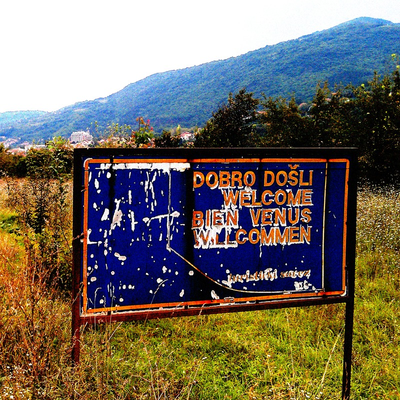

#!/usr/bin/env rm
Без слов
- Луна Виноградной Лозы
- Перевал
- Шёлкова трава заплетает след
- Μετεμψύχωσις
- Лазарь
- Птица Феникс
- Аврора
- Серебряная река
- Fata Morgana
- Новая весна
- कल्प (Колесо Времени)
- Апрель
- Туман над росстанью
- Ко Святому Озеру
- Бумажный змей
- Consolamentum
- Паутина
- Предания Старого Парка
- За Гранью Кристалла
- Свет Ветра
- Nevermore
- Три дня в Неаполе
- Terra Incognita
- Долина Мориона
- Нуар
- По следу
- Дочь Девяти Лун
- То, что оставил дождь
- Всё будет не с нами
- В отражении Красной Луны
- Утро, которое ночь
- Горький берег

